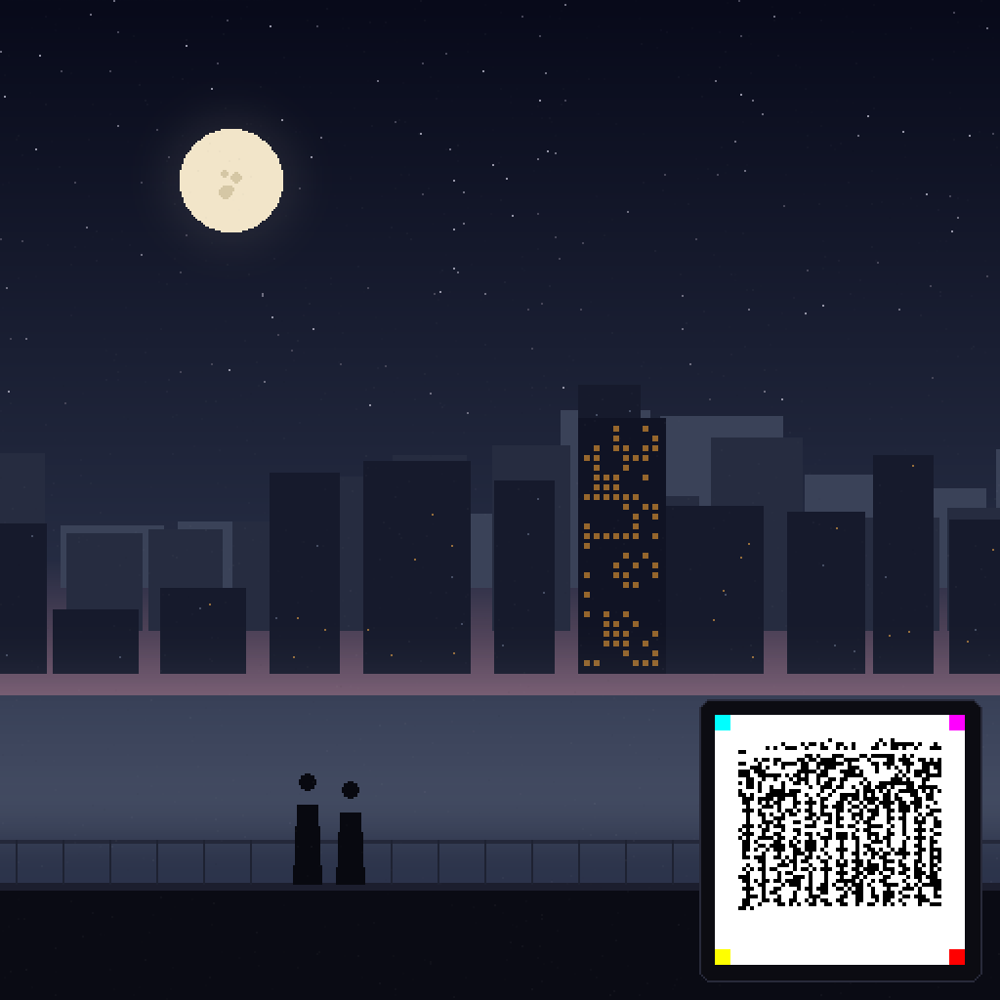

The seal shrinks to a signature. The art takes the canvas back.
Piece #12 wore its certificate as a billboard. #13 wove it into a facade. #14 stamps it in the corner like a hanko — the seal a printmaker presses onto a finished work. Two figures on a rooftop, fog rolling through the district, and in the distance: the amber grid of Facade #13. The certificate is 1.5% of the canvas — a bare 128px mark, no plate, no frame — and it carries everything. This is the reference for the Sealed Signature standard.

What the hanko says
{
"collection": "night-districts",
"piece": 14,
"supply": 100,
"traits": {"weather":"fog","district":"koenji",
"palette":"steel-rose","sign":"hanko"},
"rarity_rank": 2,
"art": "837766ef1d8d532e"
}
Signed by the studio key (demo): 038e2cb0…6538 · action 0xA47C · target NFT1. Zoom into the corner and scan it with the scanner.
How small can an SV Code get? — measured, not theorized
We rendered the same signed certificate at shrinking cell sizes and ran the full decode chain (anchors → fountain solve → envelope → ECDSA) after real-world abuse: noisy backgrounds, JPEG recompression at quality 80/70/60.
| Seal size (on a 1024px image) | Cell pitch | PNG | JPEG q80 | JPEG q60 |
|---|---|---|---|---|
| 128 × 128 px — this piece, 1.5% of canvas | 2 px | VALID | VALID | VALID |
| 256 × 256 px | 4 px | VALID | VALID | VALID |
| 384 × 384 px | 6 px | VALID | VALID | VALID |
The floor is 128px for both decoders — a postage stamp. (Shipping this size surfaced a real bug: the site's JS scanner sampled every 2nd pixel with a conservative area floor and missed 128px seals entirely. Fixed and regression-tested — all four series pieces still pass, 10/10 decoder suite.) For physical print, the floor is set by the camera, not the file: the sticker campaign prints at ~300 px/inch.
The Sealed Signature — standard
Placement
Bare seal, bottom-right corner, 20px inset. No plate, no frame — the seal's own light margin is the border, like paper around a signature. Pasted last, after all vignette/grain: nothing ever draws over a cell.
Rules
128–256px on a 1024 canvas (1.5–6%). Light cells may be softened to warm paper — never darkened. The scene carries zero pure cyan/magenta/yellow/red: those four hues belong to the seal's corner anchors alone. Verify PNG + JPEG q80 before publishing.
Verified by two independent implementations
Python reference decoder
[png] sig: VALID cert: MATCH [jpg] sig: VALID cert: MATCH lsb shard: OK (101 bytes)
JavaScript site decoder
9 passed, 0 failed signature VALID · action 0xA47C target NFT1 · traits ✓ · art hash ✓
One certificate, three hiding depths
#12 Alley — billboard
The seal as the scene's centerpiece neon sign. Loud by design: the hanko philosophy, unmissable. View →
#13 Facade — texture
The seal as a skyscraper's lit windows, palette-shifted amber-on-navy. Casual viewers see a building; sharp eyes see a grid. View →
#14 Rooftop — signature
The seal as a corner stamp, 6% of the canvas. The art is just art; the signature is the certificate. Plus shard 2 of 3 hidden in the bits.
The shard trail: #13 facade carried shard 1 — "the other two signs hang elsewhere in the district". This piece carries shard 2 — "one sign remains: it blooms, it does not hang". The third piece completes the set: #15 Bonsai →